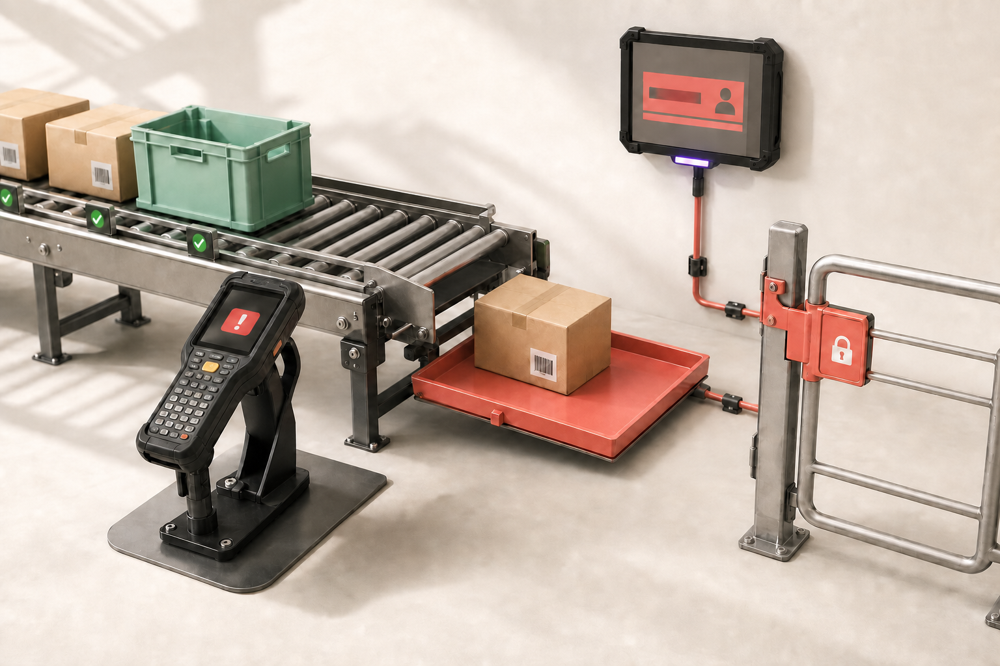

Понять контекст
Собираю документацию, ограничения, роли и текущий процесс. Чётко отмечаю, где есть факт, а где пока только гипотеза.
Product / UX Engineer · B2B и сервисные продукты
Разбираю, где в рабочем процессе возникает риск, связываю решение с метрикой и показываю, как проверить его до масштабирования.
 Скан принят2 исключения требуют решения
Скан принят2 исключения требуют решенияИзбранные проекты
В обоих случаях интерфейс влияет на операционный результат: товар попадёт в учёт или зависнет, клиент поймёт статус или снова позвонит.

Концепция для сканирования, исключений и передачи в 1С. Доказательная база и эффект пока требуют проверки на реальном складе.
Открыть кейс ↗
Концепция сквозного контекста аварии: адрес, статус, следующий шаг и история обращения работают как одна модель.
Открыть кейс ↗Как я работаю
На выходе — не только макет: карта процесса, правила, прототип, критерии успеха и следующий безопасный шаг.
Собираю документацию, ограничения, роли и текущий процесс. Чётко отмечаю, где есть факт, а где пока только гипотеза.
Формулирую: «Если сделать X, то изменится Y». Выбираю показатель до/после и правило, при котором решение нельзя масштабировать.
Проверяю основной путь и исключения на прототипе, затем предлагаю наблюдение и пилот с baseline, p90 и остановкой при критической ошибке.
Что я приношу в команду
Свожу предметную область, технические зависимости и пользовательские действия в одну систему, которую можно обсуждать и измерять.
Путь от исходной задачи до результата — включая ошибки, обходные пути и редкие случаи с высокой ценой.
Что система знает, что сохранила, чего ждёт и какой следующий шаг действительно безопасен.
Общие правила и компоненты, которые не дают продукту распадаться на несвязанные экраны.
Артефакты, факты и гипотезы с понятным способом подтвердить каждую важную идею.
Если задача сложнее, чем отдельный экран
Пылёв Юрий · Product / UX Engineer
Подключаюсь к продуктам с непростыми процессами, данными и техническими ограничениями. Помогаю найти узкое место, собрать решение и проверить его вместе с командой.